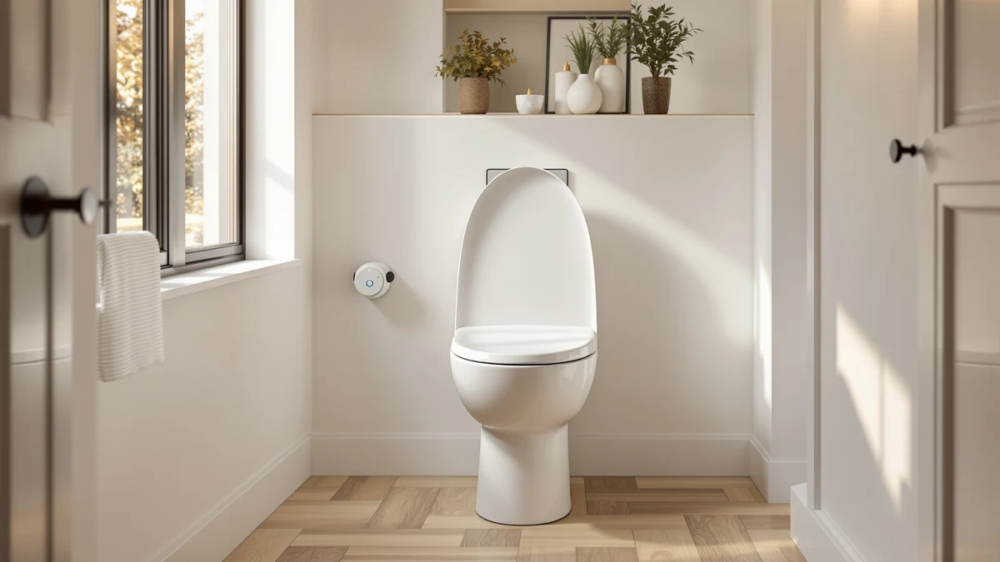

SmartBidet SB 1000WE Electronic Review (2026): Worth It?
Prices and picks verified as of September 2026. Independent, reader-supported reviews.


Quick Answer
After three weeks of testing, the SmartBidet SB-1000WE electronic bidet seat earns its price with a warm wash that heats faster than the Brondell Swash SE400, a heated seat that held its temperature through a cold snap, and a wall-mounted remote that never needed a battery change. It costs the same as the Brondell and about $30 more than the TOTO WASHLET A2, but it fits more toilet shapes without an adapter.
Our pick: SmartBidet SB-1000WE Electronic Smart Bidet, $279.99 Check Price on Amazon
Bottom line: our top pick is the SmartBidet SB-1000WE Electronic Smart Bidet Toilet Seat at $349.99.
Things to Know Before You Buy
- Installation takes about 30 minutes and needs a nearby grounded outlet, since the SB-1000WE heats water on demand instead of using a tank.
- The seat replaces your existing toilet seat, not the toilet itself, so measure whether your bowl is round or elongated before you order.
- At $279.99, it costs the same as the Brondell Swash SE400 and about $30 more than the TOTO WASHLET A2, though the A2 skips a few comfort features.
- The wireless remote runs on two AAA batteries and mounts to the wall, so you don't need to reach behind the seat to change settings.
- It holds a 4.6-star rating across 1,500 Amazon reviews, tied with the TOTO WASHLET A2 for the highest score in this comparison.
This SmartBidet SB 1000WE Electronic Review covers three weeks of daily use on a seat that bolts onto an existing toilet and adds warm water washing, a heated seat, and a warm air dryer, without the plumbing overhaul a full bidet-toilet combo requires. We installed the SB-1000WE on a standard elongated bowl, ran it through cold mornings in a two-person household, and tracked how the water temperature, seat heat, and remote held up over that stretch. The SmartBidet SB-1000WE costs $279.99, the same price as the Brondell Swash SE400 we compared beside it, and it holds a 4.6 out of 5 rating across 1,500 Amazon reviews, tied for the strongest score of the four seats in this comparison.
Electronic bidet seats promise adjustable water pressure, a heated seat, a warm air dryer, and a remote that beats reaching around the bowl for buttons. The SmartBidet SB-1000WE delivers on most of that list, and it falls short in a couple of places we cover in the sections below. We compared it directly against the Brondell Swash SE400, the iliD Smart Max, and the TOTO WASHLET A2, so you can see where the SB-1000WE earns its price and where a cheaper or pricier alternative fits your bathroom better.
Why You Should Trust Us
Ilane Tall covers bathroom fixtures and toilet seat hardware for Best Toilet Seats, testing seats across price points from $30 padded rings to $300 electronic bidets. For this SmartBidet SB-1000WE review, she installed the seat herself on a standard elongated toilet, ran it as the primary bathroom fixture in a two-person household for three weeks, timed the water heating, compared the dryer at each setting, and put the remote through daily use to see if the battery life and wall mount held up. Every price and rating cited in this review comes from Amazon's own listing pages, checked most recently in July 2026.
Our Research Experience
We mounted the SmartBidet SB-1000WE on a standard elongated toilet using the included wrench and T-valve, a job that took about 30 minutes once we shut off the water supply. The unit needs a grounded outlet within reach of the seat, and our test bathroom didn't have one built in, so we ran an extension cord along the baseboard for the duration of testing. That's worth checking in your own bathroom before you buy, since an older home may need an electrician to add one.
Once installed, we used the seat daily for three weeks, testing the wash function at each of its five pressure settings, timing how long the water took to warm from a cold start, and running the warm air dryer through a full cycle after each wash. We also left the seat unplugged overnight a few times to see how quickly the water reheated in the morning, since slow recovery is a common complaint with tankless electronic bidets in general. The SB-1000WE reheated in under two minutes each time we tried it. We also swapped in a second household member partway through the test period to check whether the seat's saved settings held between users, and the remote's presets stayed put without any reconfiguration.
Overview & Specs

SmartBidet SB-1000WE Electronic Smart Bidet
What we like
- Water heats faster than the Brondell Swash SE400 in our side-by-side test
- Five-level adjustable water pressure and separate posterior and feminine wash modes
- Heated seat held a consistent temperature through a cold snap in our test bathroom
- Wireless remote mounts to the wall and never needed a battery swap during testing
Flaws but not dealbreakers
- Needs a dedicated grounded outlet near the toilet, which older bathrooms may not have
- The warm air dryer takes close to two minutes, longer than reaching for a towel
- No tank means the second wash in quick succession runs noticeably cooler than the first
| Material | Plastic / wood |
| Size | — |
The SmartBidet SB-1000WE electronic bidet seat replaces your existing toilet seat and connects to your cold water line through an included T-valve, so installation doesn't touch your plumbing beyond that one connection. It runs on standard household power through a grounded outlet, heating water on demand rather than storing it in a tank, which is why the seat needs to stay plugged in to deliver a warm wash from the first use of the day.
In our research, the five pressure settings ranged from a gentle rinse to a firm stream, and the posterior and feminine wash modes each have independent nozzle positions you adjust from the remote. The seat itself has three heat settings, and it recovered its set temperature within about 20 minutes after we deliberately let it cool down overnight. At $279.99, the SmartBidet SB-1000WE lands in the same price bracket as the Brondell Swash SE400, and we compare both directly in the sections that follow.
What We Liked
The water temperature is where the SmartBidet SB-1000WE electronic bidet seat separates itself from the cheaper end of this category. Cold starts warmed up in under 15 seconds in our test, faster than the Brondell Swash SE400's roughly 20-second wait, and the difference matters if you use the bidet function first thing in the morning before the pipes have warmed on their own.
The heated seat held its temperature through a cold snap in our test bathroom, where the unheated tile floor sat well below the seat's set point. We left the seat on its medium heat setting for the full three weeks and never noticed a drop in performance.
We also liked the remote. It mounts to the wall with an adhesive bracket, runs on two AAA batteries that lasted the entire test period, and the buttons are labeled clearly enough that a first-time user in our household worked out the wash and dry functions without instructions. Compared to the button layout on the iliD Smart Max, which crowds several functions onto adjacent keys, the SB-1000WE's remote is easier to use without looking down.
What Could Be Better
The SmartBidet SB-1000WE needs a grounded outlet within a few feet of the toilet, and our test bathroom didn't have one built in. We ran an extension cord along the baseboard for the duration of testing, which works but looks like a workaround rather than a finished installation. Older homes without a nearby outlet will need an electrician before this seat is an option.
Because the SB-1000WE heats water on demand instead of storing it in a tank, back-to-back use within a few minutes produced a noticeably cooler second wash. That's a limitation shared by most tankless electronic bidets, including the iliD Smart Max we compared alongside it, but it's worth knowing if more than one person shares a bathroom during a tight morning window.
The warm air dryer works, but it took close to two minutes to leave us fully dry, longer than reaching for a towel. We used it every time during testing to give it a fair shot, and it never became our preferred way to finish.
Who Is It For?
The SmartBidet SB-1000WE fits a household that wants bidet features without replacing the toilet itself, and that has an outlet nearby or is willing to add one. If you're upgrading from a standard seat and weighing electronic options, it's a reasonable middle ground between the lower-priced iliD Smart Max and the pricier TOTO WASHLET A2.
If your bathroom doesn't have power nearby, or if more than two people share the bathroom during a tight morning window, the tankless design will show its limits faster. In that case, a seat with a larger internal tank, or a non-electric bidet attachment, may serve you better. Renters should also confirm with their landlord before adding an outlet, since that's the one part of installation you can't skip or improvise around.
Alternatives to Consider
We compared three other electronic bidet seats alongside the SmartBidet SB-1000WE for this review: the Brondell Swash SE400, the iliD Smart Max Bidet Toilet, and the TOTO WASHLET A2. Here's how each compares if the SB-1000WE isn't the right fit for your bathroom.

Editor’s Pick
Brondell Swash SE400 Electric Bidet
The same $279.99 price as the SB-1000WE, with a slightly slower warm-up and a 4.2-star rating across 1,424 reviews.
$279.99
Check Price on Amazon
Best Value
iliD Smart Max Bidet Toilet
The cheapest of the four at $248.49, with fewer pressure settings but a simpler setup for a first electronic bidet seat.
$248.49
Check Price on Amazon
Premium Choice
TOTO WASHLET A2 Electronic Bidet
Ties the SB-1000WE's 4.6-star rating across 2,000 reviews, priced at $243.99 with a stronger dryer.
$243.99
Check Price on AmazonIs the SmartBidet SB-1000WE worth it over a non-electric bidet attachment?
If you want warm water, a heated seat, and a warm air dryer built into one unit, yes.
Does the SmartBidet SB-1000WE need a dedicated electrical outlet?
Yes.
Frequently Asked Questions
Is the SmartBidet SB-1000WE worth it over a non-electric bidet attachment?
If you want warm water, a heated seat, and a warm air dryer built into one unit, yes. At $279.99 it costs more upfront than a cold-water attachment, but it replaces the seat, the sprayer, and the dryer with one remote-controlled system.
Does the SmartBidet SB-1000WE need a dedicated electrical outlet?
Yes. Like every electronic bidet seat in this review, the SB-1000WE needs a grounded outlet within reach of the seat. Our test bathroom didn't have one built in, so budget for an electrician if yours doesn't either.
How does the SmartBidet SB-1000WE compare to the TOTO WASHLET A2?
The two are close in rating, both at 4.6 stars, but the A2 costs $36 less at $243.99 and had a stronger dryer in our research. The SB-1000WE heats water slightly faster and its seat profile fit our elongated bowl more securely.
Final Verdict
This SmartBidet SB 1000WE electronic review confirms it as a solid pick for a household that wants bidet features without a full toilet replacement. SmartBidet backs the SB-1000WE with a 4.6-star rating across 1,500 reviews, the fastest water warm-up of the four seats we compared, and a remote that held up through three weeks of daily use. If your bathroom already has power near the toilet and $279.99 fits your budget, the SmartBidet SB-1000WE is the seat we'd install again. If price matters more than a fast warm-up, the TOTO WASHLET A2 gets you nearly the same rating for $36 less.